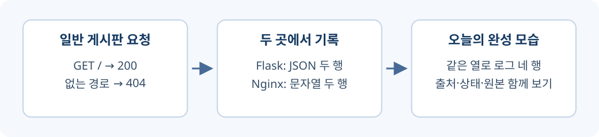

일반 게시판에서 로그인하고 페이지를 열면 서버에는 무엇이 남을까? 준비된 사이트를 직접 사용하고, 감시 화면에서 내 요청의 원본 로그를 찾아보자. 이번 시간에 확인할 흐름이다.

- 게시판과 감시 화면에 준비된 계정으로 들어간다.
- 직접 연 /training-missing의 앱 로그와 404를 찾는다.
1단계. 오늘 만들 결과 알아보기
오늘 만드는 것은 작은 SIEM 로그 조회 기능이다. SIEM은 Security Information and Event Management의 줄임말로, 여러 시스템의 기록을 모아 같은 기준으로 조사하는 보안 관리 체계다. 앱은 JSON으로, 앞단 웹서버는 긴 문자열로 기록한다. 이 둘을 같은 열로 바꾸는 정규화 함수를 만들고, 실제로 사이트를 더 사용했을 때 감시 화면의 결과도 바뀌게 한다.
사이트 직접 사용 → 두 원본 수집 → 같은 항목으로 정규화 → 통합 표에서 확인| 구분 | 이번 수업에서 하는 일 |
|---|---|
| 이미 준비됨 | Docker 실행 설정, 계정과 DB, 게시판, 원본 파일 연결, 감시 화면 |
| 직접 구현 | 앱 변환 함수, Nginx 변환 함수, 두 목록 합치기, 오류 집계 |
clone은 코드를 받는 동작이다. 내 요청 로그는 실행한 사이트를 직접 사용한 뒤 생긴다. 시작 명령이 예제 네 행을 대신 만들어 주는 방식이 아니다.
2단계. 준비된 사이트 실행하기
시작본을 받고 Docker로 켜자
Git·VS Code·Docker Desktop이 설치된 교실 Windows PC에서 시작한다. Docker Desktop을 켜고 실행 준비가 끝나면 Windows 검색에서 명령 프롬프트(cmd)를 연다. 프로젝트 폴더의 Windows CMD
if not exist C:\work mkdir C:\work
cd /d C:\work
git clone --branch m5d3-start --single-branch https://github.com/zeroskill2400/mini-watch.git mini-watch-m5d3
cd mini-watch-m5d3
docker compose -f compose-general.yaml up -d --build --wait
docker compose -f compose-monitor.yaml up -d --build --wait첫 Docker 명령이 일반 게시판을, 다음 명령이 감시 서비스를 켠다. 한 줄씩 실행하고 첫 명령이 오류 없이 끝난 뒤 다음 명령으로 넘어간다. -f는 실행 설정 파일을 고르고, --wait는 서비스가 준비될 때까지 기다린다. 네트워크·저장 공간은 Compose가 만들고 일반 앱과 감시 앱의 init.py가 수업 계정을 준비한 뒤 서버를 켜므로, 초기화 파일을 직접 실행하거나 수정하지 않는다.
게시판에 로그인하자
| 화면 | 접속 주소 | 아이디 | 비밀번호 |
|---|---|---|---|
| 일반 게시판 | http://localhost:8081/login | class-student |
classroom1234! |
| 감시 화면 | http://localhost:8082 | class-operator |
classroom1234! |
게시판 사용하기
- 브라우저에서 일반 게시판 로그인을 연다. class-student와 classroom1234!를 입력하고 로그인을 누른다.
- 게시글 목록과 class-student 님이 로그인했습니다라는 문구를 확인한다.
이 계정은 내 PC 수업용이다. 계정 설정이 아니라 로그인 요청이 남기는 기록을 살펴보는 것이 목적이다.
감시 화면을 나란히 열자
감시 화면 열기
- 새 탭에서 감시 화면을 연다. class-operator와 classroom1234!로 로그인한다.
- 원본 로그 불러오기를 누르고 앱 원본에서 /auth/login과 상태 200인 기록을 찾는다.
{"method": "POST", "path": "/auth/login", "status_code": 200}위 한 줄은 정상 로그인 뒤 찾을 기록의 형태다. 다른 경로도 함께 나올 수 있다. JSON은 항목 이름과 값을 짝으로 담는 형식이며, method는 요청 방법, path는 경로, status_code는 응답 상태다. POST는 로그인 정보처럼 데이터를 보내는 요청이다. 200은 정상 처리됐다는 뜻이다. 감시 화면 자체의 로그인은 이 일반 게시판 로그에 포함되지 않는다.
시작이나 로그인이 막히면
이미 같은 폴더가 있으면 기존 작업은 지우지 말고 clone 명령 마지막 이름을 mini-watch-m5d3-new로 바꾼다. 이후 cd와 VS Code에서도 그 새 폴더를 사용한다. 포트 8081·8082가 사용 중이면 Docker Desktop의 Containers에서 그 포트를 쓰는 이전 실습만 Stop한다. 새 폴더라고 포트 충돌까지 없어지는 것은 아니다. 프로젝트 폴더의 Windows CMD
docker compose -f compose-general.yaml ps
docker compose -f compose-monitor.yaml ps
docker compose -f compose-general.yaml logs --tail 20 general-api
docker compose -f compose-monitor.yaml logs --tail 20 monitor-api두 설정이 각각 다른 서비스를 관리하므로 상태와 로그도 파일을 지정해 확인한다. compose-general.yaml을 찾지 못하면 clone한 프로젝트 폴더인지 확인하고, 로그의 오류는 강사에게 보여 주며 DB 볼륨은 삭제하지 않는다.
3단계. 내가 만든 요청을 원본에서 찾기
없는 주소로 요청 하나를 구분해 보자
경로와 결과 비교하기
- 일반 게시판 탭 주소창에 http://localhost:8081/training-missing을 입력하고 Enter를 누른다.
- 페이지가 없다는 화면을 확인한 뒤 감시 탭의 원본 로그 불러오기를 다시 누른다.
- 앱 원본에서 /training-missing과 404를 찾는다.
{"method": "GET", "path": "/training-missing", "status_code": 404}GET은 페이지를 읽는 요청이고 404는 해당 경로가 없다는 응답이다. 지금은 우리가 없는 주소를 열었기 때문에 생긴 기록이지, 공격을 탐지했다는 뜻이 아니다. 브라우저는 페이지 외에 스타일 파일 등을 함께 요청할 수 있다. 전체 줄 수를 맞추기보다 내가 입력한 경로와 상태가 나타나는지 확인하자.
이 한 줄은 어디서 만들어질까
VS Code의 파일 → 폴더 열기에서 실제 clone한 폴더를 연 뒤 general/app.py를 선택하자. Flask는 게시판 요청을 처리하는 Python 웹 도구이고, 아래는 준비된 코드의 읽기용 발췌다. general/app.py — 응답 뒤 기록 함수 연결
from request_logging import record_request
app.after_request(record_request)after_request가 응답을 만든 뒤 record_request를 호출한다. 그래서 이 함수는 들어온 경로와 처리 결과를 함께 읽을 수 있다. general/request_logging.py — 읽기용 발췌
event = {
'method': request.method,
'path': request.path,
'status_code': response.status_code,
}
log_line = json.dumps(event, ensure_ascii=False)request.path가 내가 연 /training-missing이고 response.status_code가 404다. json.dumps는 이 묶음을 JSON 문자열로 바꾼다. 같은 함수의 파일 기록 부분 — 읽기용 발췌
with open(log_path, 'a', encoding='utf-8') as log_file:
log_file.write(log_line + '\n')준비된 설정의 log_path는 /classroom-logs/app.jsonl이다. a는 파일 뒤에 추가하는 방식이며, JSONL은 이렇게 JSON 한 개를 한 줄씩 담은 파일이다. 내 프로젝트의 classroom-logs/app.jsonl에서도 같은 원본을 볼 수 있다. 감시 화면의 원본 조회는 공유된 이 파일을 읽는다. 다음에는 Nginx 파일까지 같은 곳에서 읽는 연결을 확인한다.
확인문제
확인문제 1. clone 직후 내 로그인 기록도 이미 있는가?
정답과 해설
아니다. clone은 코드 수신이다. 실행한 사이트를 직접 사용해야 그 요청의 로그가 생긴다.
확인문제 2. 서비스를 켤 때 실행할 명령은 무엇인가?
정답과 해설
프로젝트 폴더에서 docker compose -f compose-general.yaml up -d --build --wait를 실행한 뒤 docker compose -f compose-monitor.yaml up -d --build --wait를 실행한다. 일반 게시판을 먼저 준비하고 감시 서비스를 켠다.
확인문제 3. 일반 게시판은 어디에 접속하고 어떤 계정으로 로그인하는가?
정답과 해설
http://localhost:8081/login에서 class-student와 classroom1234!를 사용한다. 수업용 계정은 준비되어 있다.
확인문제 4. 감시 화면 계정이 게시판 계정과 같은가?
정답과 해설
아니다. http://localhost:8082에서 class-operator를 사용하며 수업 비밀번호는 classroom1234!이다.
확인문제 5. 정상 로그인은 어떤 경로와 상태로 찾는가?
정답과 해설
/auth/login과 200을 찾는다. 데이터를 보내므로 방법은 POST이다.
확인문제 6. 없는 주소를 연 뒤 어떤 버튼을 눌러 원본을 갱신하는가?
정답과 해설
감시 화면의 원본 로그 불러오기를 다시 누른다. 사이트를 연 것과 화면을 갱신하는 것은 별도 동작이다.
확인문제 7. /training-missing의 404는 공격을 뜻하는가?
정답과 해설
아니다. 이 실습에서는 우리가 일부러 없는 주소를 열어서 생긴 응답이다.
확인문제 8. 앱 로그의 경로와 상태는 어디에서 가져오는가?
정답과 해설
request.path와 response.status_code에서 읽는다. 요청과 응답의 실제 값이다.
확인문제 9. 기록 함수는 요청 처리와 어떻게 연결되는가?
정답과 해설
app.after_request(record_request)로 등록되어 응답을 만든 뒤 호출된다.
확인문제 10. 클릭 한 번에 앱 로그가 반드시 한 줄만 생기는가?
정답과 해설
아니다. 브라우저의 추가 파일 요청 등이 있을 수 있으므로 총 줄 수보다 목표 경로를 찾는다.
내 클릭이 앱의 JSON 기록으로 남는 것을 확인했다. 다음에는 같은 요청이 앞단 Nginx에는 어떤 모양으로 남는지 비교한다.